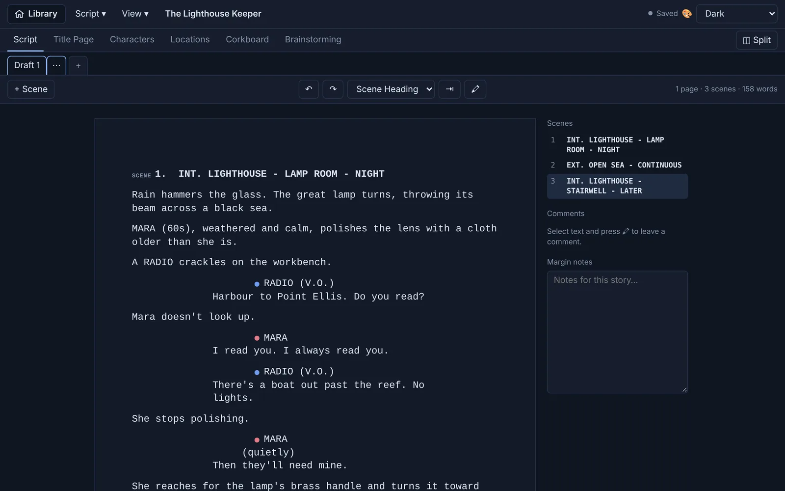
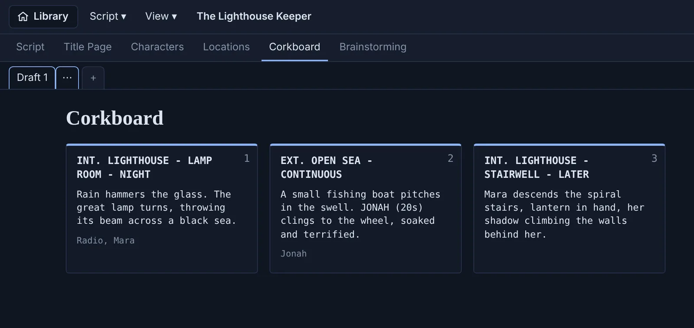
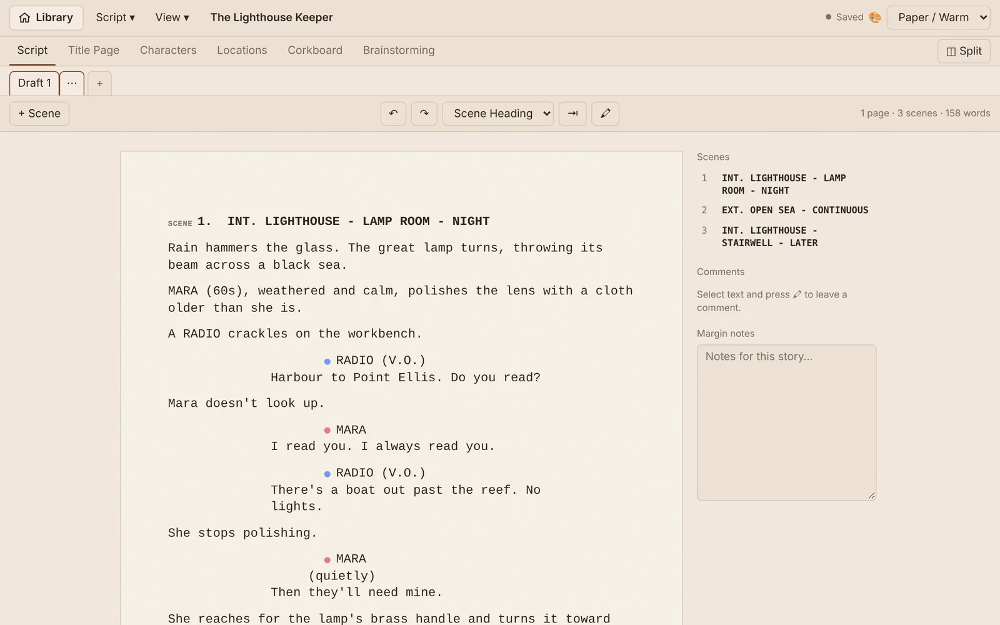

The free writing app for screenplays and novels
Scripti Writer is a quiet, distraction-free place to write. Industry-standard script formatting, chapters, characters, a corkboard and a brainstorm board. For Mac and Windows. No account, no subscription.
Beta 0.2.0 · Apple Silicon and Intel Macs · Windows 10 and 11

Everything a writer needs. Nothing in the way.
Scripti Writer handles the formatting so you can think about the story.
Screenplay editor
Industry formatting as you type. Enter moves to the next line type, Tab switches it. Scenes are numbered automatically.
Novel editor
Write manuscripts with chapters, scene breaks and a chapter list, and export a standard manuscript.
Corkboard
Every scene as an index card. See the whole story at a glance and jump to any scene.
Brainstorm board
Sticky notes, scene and character cards, arrows, shapes, a pencil, story beats and an act timeline.
Characters and locations
Filled in from your script automatically, with colour coding so you can spot who speaks where.
Drafts side by side
Keep several drafts of a story and compare them in split screen. Full undo and redo.
Export to the formats the industry uses
Send your script to a producer, a contest or a co-writer in the format they ask for.
- PDF in standard screenplay page format (Courier 12, page breaks, MORE and CONT'D)
- Final Draft (.fdx) and Fountain, to import and export
- Word (.docx), Markdown and plain text
- Everything at once, in one folder


Calm by design
Four looks for day and night: Dark, Light, Paper / Warm and Night Warm. Focus mode hides everything but the page.
- Works offline. Your writing saves automatically as you type.
- Private. Stories stay on your computer. Nothing is uploaded.
- Highlights and comments for notes to yourself.
- Update notice. The app tells you when a new version is out, and nothing installs until you click.
Scripti Writer is still in beta, and your feedback makes it better
Scripti Writer works and is ready to write in, but it's an early version, so you may run into bugs. Back up your stories now and then with Back up all in the library.
I'd love to hear what you think. What's missing? What gets in your way? What would make Scripti Writer the app you reach for every day? Every report and idea is read.
Feedback goes through GitHub, which needs a free account.
Install in a minute
Scripti Writer isn't signed with a paid Apple or Microsoft certificate, so your computer asks you to confirm the first time. That's expected. Each release lists a SHA-256 checksum for every file, so you can check your download.
Mac
- Open the .dmg and drag Scripti Writer into Applications.
- Open Scripti Writer. When macOS says it can't verify the app, click Done.
- Go to System Settings → Privacy & Security and click Open Anyway.
Windows
- Run the setup .exe.
- If "Windows protected your PC" appears, click More info → Run anyway.
- Scripti Writer installs for your user only, with Start menu and desktop shortcuts.
Questions
Is Scripti Writer really free?
Yes. No price, no subscription, no account and no ads. Scripti Writer is open source under the GNU General Public License v3.0, so every copy, including changed versions, must stay free and open.
Where are my stories saved?
On your own computer, in the app's data folder. Nothing is uploaded. Use Back up all in the library to keep a copy or move your stories to another computer.
Will updating delete my stories?
No. Install the new version over the old one and your library stays as it is. Uninstalling keeps your stories too. A backup before a big update is still a good idea while Scripti Writer is in beta. The app shows a notice when a new version is out; click Download and finish the install as usual.
I have "Scripti" 0.1.0. What changed?
The name, plus new things like the update notice. Scripti Writer is the same app and opens your existing stories. On a Mac you can delete the old "Scripti" app from Applications afterwards.
Can I open my Final Draft or Fountain scripts?
Yes. Use Import… in the library to open .fdx and .fountain files, and export back to both.
Is it a Final Draft alternative?
For many writers, yes: Scripti Writer formats screenplays to the industry standard and exports PDF and .fdx. It's a beta, so check your exports before sending them anywhere important.
Can I help build it?
Please do. The code is on GitHub. Open an issue, or fork the project and send a pull request.